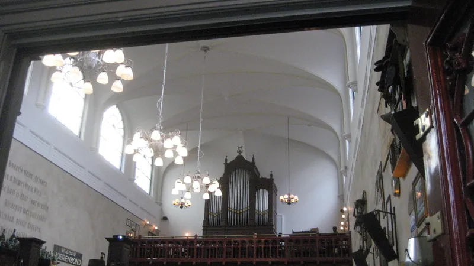
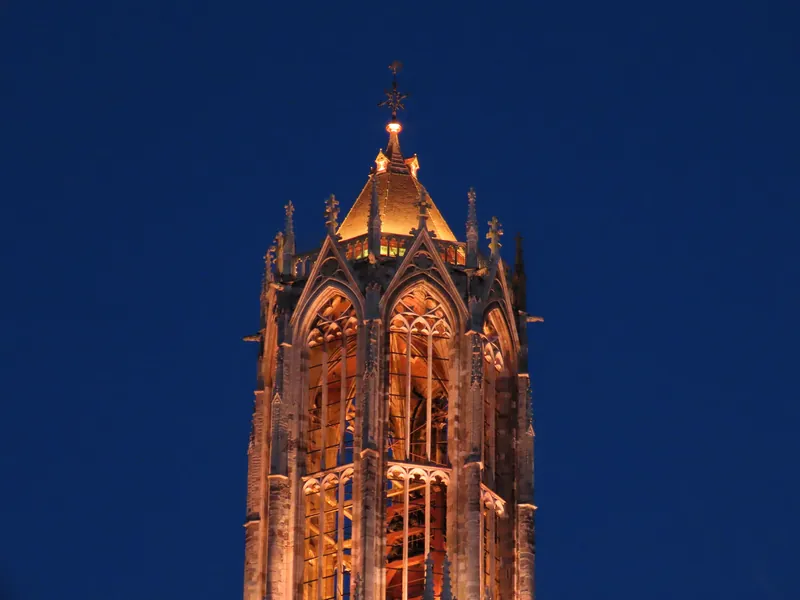

¿Vienes de visita o te vienes a vivir?
Las dos cosas se cuentan distinto. Elige tu camino y verás solo lo que te sirve.
La última vez mirabas la guía para mudarte. Volver al modo «me mudo a vivir» →
¿Utrecht o Ámsterdam?
Están a media hora la una de la otra y las dos tienen canales. La diferencia es lo que pasa cuando bajas del tren.
Utrecht
- Terrazas en bodegas del siglo XII, a pie de agua
- Calles medievales que se pasean sin esquivar a nadie
- Torre del Dom: 112,5 m, la más alta de Holanda
- Cerveza artesanal dentro de una iglesia del siglo XIII
- A 30 min de Schiphol en tren directo cada 15 minutos
- Escena gastronómica emergente y de barrio
- Donde los holandeses van a disfrutar
Ámsterdam
- Barcos turísticos atascados en los canales del centro
- Zona Roja y masificación en el casco antiguo
- Skyline moderno más genérico fuera del centro
- Cerveza cara en pubs pensados para el turista
- También a 30 min, pero con mucho más caos alrededor
- Comida del centro sobrevalorada y con colas
- Donde van los turistas
«Sí, Ámsterdam es impresionante. Pero Utrecht es donde los holandeses van cuando quieren disfrutar de su propio país.»
— Zaswear, que lleva años viviendo aquí
Qué ver según el tiempo que tengas
Rutas reales, con horas y distancias, hechas caminando. Elige los días que te quedas y llévate el plan entero.
Cargando itinerario…
7 experiencias que solo pasan en Utrecht
No son «los 7 imprescindibles». Son las siete cosas que, cuando vuelvas a casa, vas a contar.
Cargando experiencias…
Dónde y qué comer
Utrecht come pronto, come bien y come barato si sabes dónde. Seis categorías para no acabar en la cadena de la plaza.
Broodje Mario
Un pan plano italiano horneado al momento relleno de salami, chorizo, queso, pimientos verdes y una salsa secreta ligeramente picante. Abierto desde 1977 bajo los arcos del Oudegracht, es el bocadillo estudiantil más famoso de la ciudad por su sabor y su precio.
Domtorentjes
Los bombones oficiales de la Torre del Dom: chocolate negro relleno de praliné cremoso de avellanas, creados en 1922 por la pastelería histórica Theo Blom, en Zadelstraat. El souvenir dulce perfecto.
Bitterballen
El aperitivo frito por excelencia: croquetas redondas y crujientes con relleno denso de carne de vacuno especiada. Se sirven ardiendo, se mojan en mostaza y son el acompañamiento obligatorio del borrel.
Stroopwafel recién hecho
Nada que ver con el del supermercado. En el mercado de Vredenburg los prensan delante de ti y el sirope gotea caliente. Miércoles, viernes y sábado.
Cenar en un werfkelder
Los restaurantes de los muelles inferiores del Oudegracht ocupan bodegas medievales de ladrillo abovedado, con las mesas a un metro del agua. Es el plan de cena con más carácter de la ciudad y, en verano, la terraza baja se llena a las 18:00.
Reserva pronto, cena pronto
Los holandeses cenan entre las 17:30 y las 19:30 y muchas cocinas del centro cierran a las 21:00. Si buscas mesa a las 22:00 te quedarás con comida rápida. Reserva siempre: los sitios buenos del canal vuelan el fin de semana.
Los locales concretos, con reseña propia y enlace a Google Maps, están todos en el mapa filtrando por «Gastronomía».
Stadskasteel Oudaen
Cervecería dentro de un castillo urbano del siglo XIII, en pleno Oudegracht. Elaboran su propia cerveza en el sótano.
vandeStreek
Los hermanos que pusieron a Utrecht en el mapa de la IPA. Famosos también por sus cervezas sin alcohol. Taproom cerca de la estación de Zuilen.
Belgisch Biercafé Olivier
Una iglesia clandestina del siglo XIX con el altar, el órgano y las bóvedas intactos, convertida en templo de la cerveza belga.
La ciudad es un paraíso plant-based: casi cualquier carta tiene opción vegana sin que haya que pedirla.
Broei
100 % vegetal, junto al canal, con huerto propio y ambiente de barrio.
Gys
Comida orgánica, sin gluten y vegana, con varias sedes por la ciudad.
KasKantine
Agricultura urbana y comida rescatada. Proyecto y restaurante a la vez.
Vredenburg Markt
Miércoles, viernes y sábado. Fruta, queso, pescado y stroopwafels calientes. El mercado grande de la ciudad.
Lapjesmarkt
Sábados por la mañana en Breedstraat. El mercado de telas más antiguo de Holanda: funciona desde 1597.
Bloemenmarkt
Sábados en Janskerkhof. Mercado de flores espectacular, con la iglesia gótica de fondo.
Qué es exactamente un borrel
El borrel es el aperitivo holandés de la tarde: cerveza o vino con bitterballen, queso viejo con mostaza y frutos secos, entre las 16:00 y las 19:00. No es una cena y no es una copa: es la excusa social por defecto del país.
El sitio natural para hacerlo son los bruine cafés (cafés marrones): pubs históricos de paneles de madera oscura y luz dorada donde se practica la gezelligheid, esa mezcla de calidez y compañía que los holandeses consideran patrimonio nacional. El más emblemático de Utrecht es el Biercafé Olivier.
Si el tiempo acompaña, el borrel se hace en las terrazas de los werven, con los pies casi dentro del canal y los patos pasando por delante.

10 rutas para descubrir Utrecht caminando
Del corazón histórico a los bosques de las afueras. Toca cualquiera para ver el recorrido completo, la distancia y por dónde empezar.
Y desde el agua: se alquilan canoas y tablas de SUP para recorrer el Oudegracht y el Singel. Mantente siempre a la derecha en los túneles y cede el paso a los barcos turísticos motorizados: no pueden frenar rápido.
65 sitios marcados, con reseña propia
Lo que recomiendo, lo que evito y dónde están los parques. Filtra por categoría y toca cualquier punto para abrirlo en Google Maps.
Haz clic sobre el mapa para activar el zoom con la rueda.
Todo lo que nadie te cuenta antes de venir
Del tren de Schiphol a la multa por mirar el móvil en bici. Abre solo lo que necesites.
Utrecht está increíblemente bien conectada con el aeropuerto de Schiphol: hay trenes directos de la NS desde la estación del propio aeropuerto cada 15 minutos, con un trayecto de 30 minutos y un precio aproximado de 11 €.
Olvídate del billete en papel: en todos los transportes de los Países Bajos puedes usar OVpay. Haz check-in al subir y check-out al bajar pasando tu tarjeta bancaria contactless (o el móvil con Apple/Google Pay). Cobra la tarifa exacta.
Ojo con el check-out: si te olvidas, el sistema te cobra la tarifa máxima del trayecto.
Utrecht es casi 100 % libre de efectivo. Bares, cafeterías, transportes y gran parte de las tiendas solo aceptan tarjeta de débito o crédito (verás carteles de Pin Only o Pinnen Ja). Lleva siempre tarjeta o el móvil listo.
Hay sitios pequeños que solo aceptan Maestro o tarjetas holandesas y rechazan crédito: si viajas con una sola tarjeta, que sea de débito.
Los holandeses cenan entre las 17:30 y las 19:30. Muchos restaurantes del centro cierran sus cocinas a las 21:00 o 21:30. Si buscas cenar a partir de las 22:00, tus opciones se reducen drásticamente a puestos de comida rápida.
Consecuencia práctica: adelanta el reloj español entero. Come sobre las 13:00, haz borrel a las 17:00 y cena a las 19:00.
Utrecht tiene una de las redes de carriles bici más integradas del mundo y alberga el aparcamiento de bicicletas más grande del planeta: 12.500 plazas bajo Utrecht Centraal, gratis las primeras 24 horas.
- Cero móviles en la mano. Está terminantemente prohibido usar el teléfono en marcha. La multa ronda los 160 € y la policía es muy estricta.
- Señala los giros con el brazo extendido antes de frenar o cruzar.
- Prioridad a la derecha. En un cruce sin marcas, la bici que viene por tu derecha pasa primero. Si ves triángulos («dientes de tiburón») pintados en el suelo, cedes tú.
- Aparca en rack oficial. Si encadenas la bici a una farola del centro, el Fietsendepot se la lleva y rescatarla cuesta 29 €.
El doble candado: pasa el candado de cadena por el cuadro y la rueda delantera asegurándola a un punto fijo, y no olvides el candado de anilla de la rueda trasera.
OV-fiets
La bici pública amarilla y azul, en la Estación Central. Requiere OV-chipkaart personal; hasta 2 bicis por tarjeta.
Swapfiets
Renting mensual con la icónica rueda delantera azul. Reparaciones incluidas y cancelación mensual.
Tiendas de alquiler
Willemstraatbike, Black Bikes y similares. No requieren tarjeta especial y tienen bicis con marchas y eléctricas.
Albert Heijn es el supermercado principal. Las ofertas marcadas en azul (descuentos Bonus) solo se aplican si pasas la tarjeta de cliente Bonuskaart en caja: puedes pedir una física gratis o escanear la digital de la app.
Trae tus propias bolsas o tendrás que pagarlas.
Museumkaart (~75 €, válida un año): acceso gratuito a más de 450 museos del país. En Utrecht cubre el Spoorwegmuseum (trenes), el Speelklok (música mecánica) y el Centraal Museum. Si vas a visitar más de cuatro museos en los Países Bajos, ya la amortizas.
Utrecht Region Pass: tarjeta recargable pensada para turistas que integra transporte público ilimitado y entradas con descuento a las atracciones de la ciudad y la región.
- 112 — Emergencias (policía, bomberos, ambulancia).
- 0900-8844 — Policía, asuntos que no son urgencia.
- 088-130-9600 — Huisartsenpost, urgencias médicas fuera de horario.
El Huisartsenpost atiende noches y fines de semana, pero hay que llamar siempre por teléfono antes de acudir: te asignan cita en el hospital de urgencias. Presentarse sin llamar no funciona.
En Utrecht prácticamente todo el mundo habla inglés y no vas a tener ningún problema. Aun así, hay cuatro palabras que oirás cada día y que abren puertas:
- Gezellig /je-sé-lej/ — acogedor, entrañable. La palabra más sagrada del país.
- Lekker /lé-ker/ — rico, agradable. Vale para la comida, el tiempo y la siesta.
- Fiets /fits/ — bicicleta.
- Borrel /bó-rel/ — el aperitivo de la tarde.
Utrecht, tal y como la veo
Una selección aleatoria de mis fotos. Cambia en cada visita.
🚶 Explora Utrecht con tu móvil
Dos rutas guiadas para hacer caminando: narración parada a parada, datos históricos, leyendas, retos de foto y acertijos. Sin guía que te meta prisa y sin pagar propina.
El alma de Utrecht
Por qué los canales tienen dos niveles, qué tornado se llevó media catedral en 1674, cómo la ciudad rellenó un canal para meter una autopista y volvió a excavarlo medio siglo después. Más los barrios, la flora de cada estación y un quiz para picarte.
